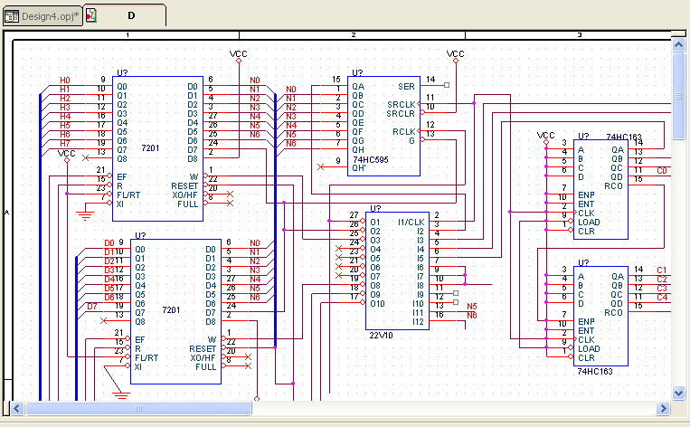
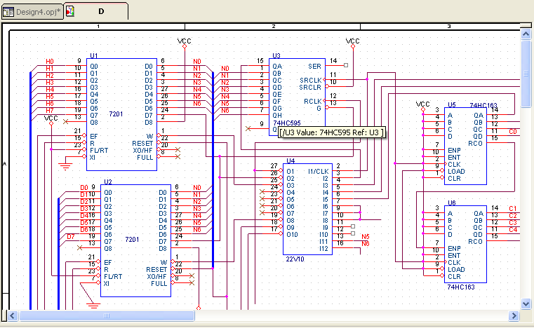

You can choose the sequence in which the components of your design are annotated.
The Annotation Sequence list contains three options that you can use to decide the sequence in which the objects on your design are annotated — Default, Left to Right, and Top to Bottom.
To differentiate between the way these sequences work on a design, we will use the example of a dense design that contains a number of large components clustered together.

If we run the annotate command on this design using the Default option, the results are as follows:
Notice the sequence of annotation of the components on the
design.
Next, we will select the Left - Right option and annotate
the design again.
The annotation procedure using this option scans the page
grid from left to right one grid line at a time. Then
moving downwards to the next grid line. In effect, the
sequence is left to right and top to bottom.
We will now annotate the design using the Top - Bottom
option.

In this case, the procedure scans the pages from top to bottom one grid line at a time. Then moving towards the left of the screen.